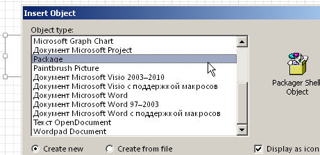
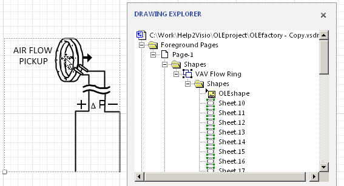
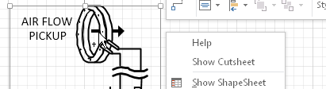
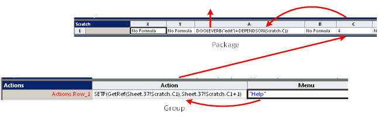
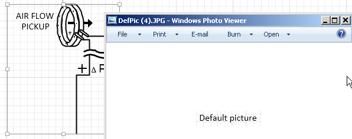
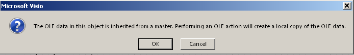

В предыдущей статье говорилось о том, как создать CHM справку для шейпов разработанного трафарета. Сейчас хочу показать несколько другой подход.
CHM справка все-таки требует наличия дополнительного файла. Его надо правильно разместить и настроить взаимодействие с шейпами. Но что если встроить справку непосредственно в сам шейп! То есть внедрить OLE объект, сжать его в точку для невидимости в обычном режиме и открывать при необходимости.
Windows позволяет встроить множество типов разных объектов: Wordpad, документ Word, даже документ Visio. Но есть еще более интересный вариант - встроить универсальный контейнер для объектов. Такой контейнер существует - это объект Package.

В целом конструкция получается следующей

Нужный шейп должен быть группой. В составе группы размещается встроенный Package, а в него помещается картинка со справкой для шейпа-группы. В моем случае это был пример схемы подключения целевого шейпа. Такой Help будет гулять вместе с шейпом без всяких дополнительных файлов.

Далее нужно решить задачу обращения к справке из шейпа. Один из привычных методов - добавление контекстного меню. Чтобы при щелчке правой кнопкой по шейпу появилось меню с пунктом Help, а при его выборе раскрылась справка.

Решаем это так. Собственно вызов встроенного объекта размещаем в шейпе - контейнере, то есть в Package. Чуть выше в Drawing Explorer он виден как OLEshape. Вызов обеспечивается функцией DOOLEVERB() в ячейке Scratch.A1. А чтобы передать управление этой ячейке организуем счетчик в ячейке Scratch.C1 средствами основного шейпа.

Теперь при выполнении меню Help функция SETF увеличит на 1 значение Scratch.C1 вложенного шейпа, а это в свою очередь через функцию DEPENDSON вызовет открытие встроенного объекта.

Так как Package универсален, в него может быть встроен объект любого типа. А уже в зависимости от типа Windows откроет содержимое в наиболее подходящем приложении. В данном случае JPG картинка открылась в Windows Photo Viewer.
Однажды вставленную картинку можно в любое время заменить. Это делается средствами того приложения, которое показывает картинку. Если в примере картинка показывается в Windows Photo Viewer, то можно использовать его меню Open для входа в режим редактирования и заменить одно изображение на другое (Copy-Paste). С учетом этого я сначала начинял весь трафарет картинками по-умолчанию (программно), а потом уже вручную заменял ее на нужную. Такой режим получился наиболее эффективным.
Заметьте, что вся система отображения работает без применения VBA, используются только функции шейп-листа.
Показанный способ имеет одну особенность - при переносе мастера на страницу рисунка Visio будет каждый раз сообщать, что встроенный объект превращается в локальную копию, то есть не будет в дальнейшем наследовать изменения встроенного объекта в мастере.

Дублирование уже размещенного на странице рисунка шейпа такого сообщения не вызывает, потому как это уже локальная копия.